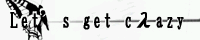

| ブリコとラージュのありあわせ | ＮａＭｅ氏の、音楽とか、民族とか、釣りとか、色々。 | |
 |
ＣＲＥＭＯＮＡ+ | 木下たまき氏の、ＭＩＤＩとか、Ｍｐ３とか、詩とか色々。 |
 |
Let's get cλazy | Λuku氏の、ガンダムイラストとか、日記とか、ＢＪとか色々。 |
 |
NOR_PRODUCTS | 加藤氏の小説とか、論文とか、辞書とか、色々。 |
 |
やまおうのＨＯＢＢＹ ＲＯＯＭ | やまおう氏の、小説とかイラストとか攻略とか、色々。 |
| Original GUNDAM Federation | オリジナルガンダム連盟。 | |
 |
ガンダムファン倶楽部 | ガンダムファン倶楽部。 |
| Voice of T.S | Voice of T.S | シャヒーナの声を担当してくださる瀬川達樹さんの、ボイスなブログ。 |
 |
Ｐodalirio_Ｄoll | ユーニスの声を担当してくださる井蝶美弥さんの、ボイスなページ。 |

|
 |
| SEO | [PR] 爆速!無料ブログ 無料ホームページ開設 無料ライブ放送 | ||